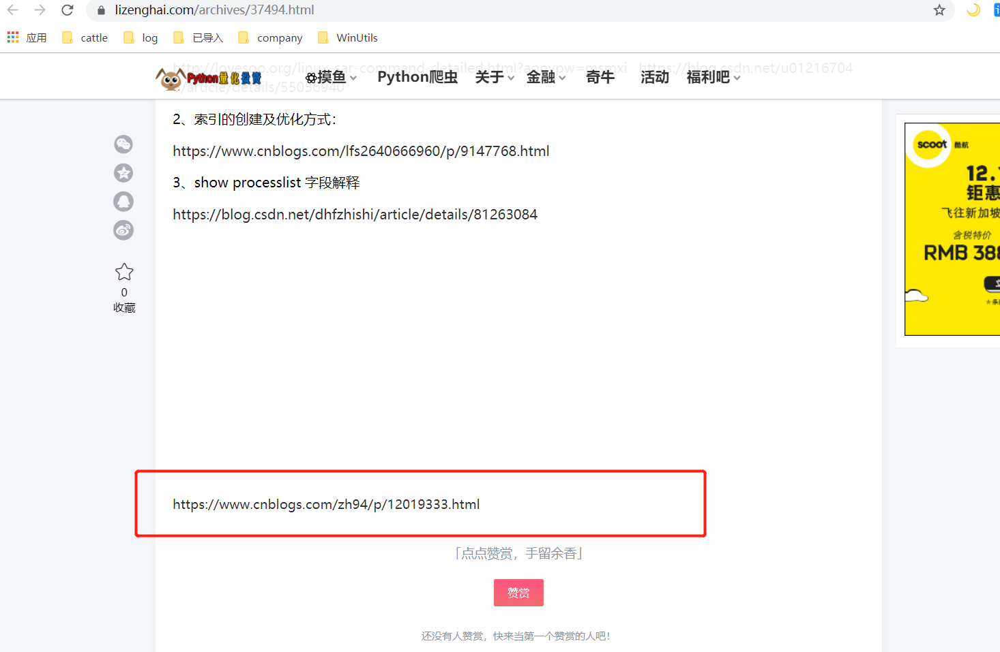
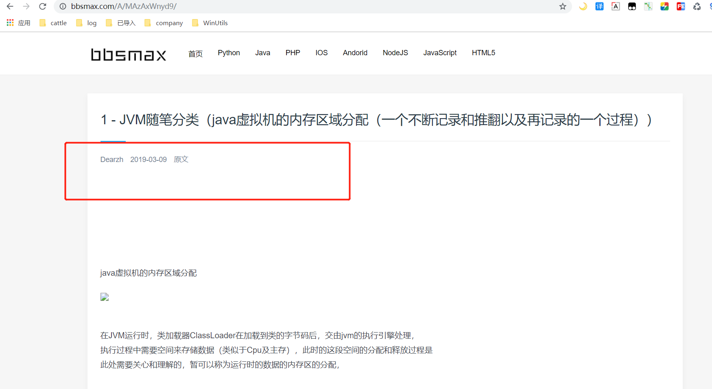
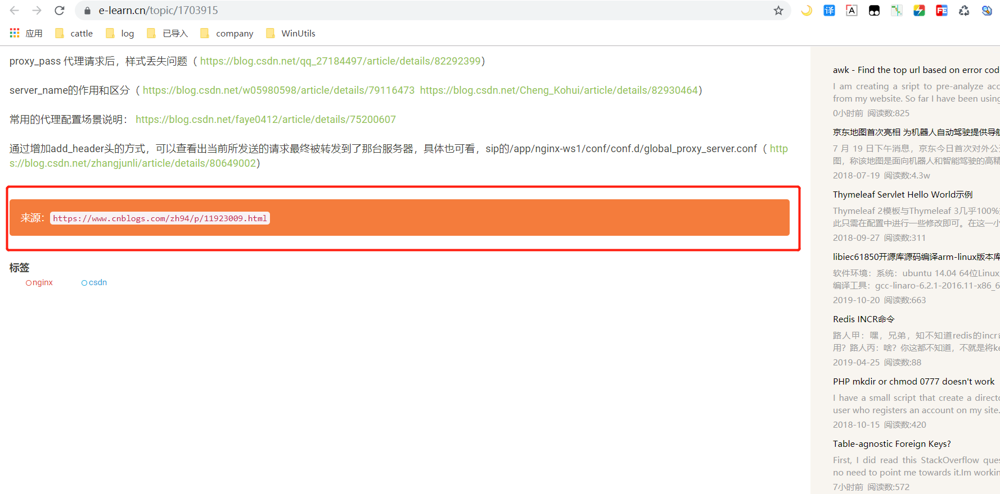
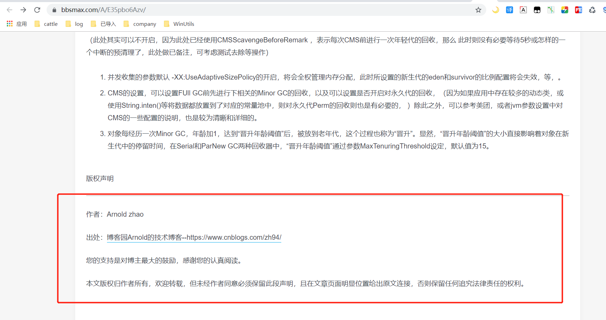
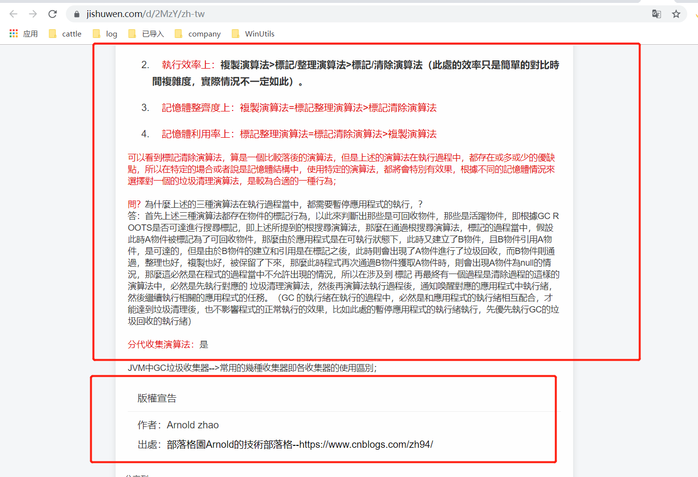

原创声明：作者：Arnold.zhao 博客园地址：https://www.cnblogs.com/zh94
【
1、记录一下博客园的文章被别的网站爬取后，如何才能在最佳的位置保留原创链接的方式
2、看一下各大网站对所爬取后的文章的处理和玩法；
】
偶然的一次时间Google上搜索一些资料，突然看到了自己曾经在博客园发布过的文章，但是点开后文章内容竟然不是在自己的博客园内，而是在另外一个网站内，此时便突然意识到，哟西，博客园的文章被别的网站爬虫了；
如下图所示：来源是一个叫做Python量化投资的网站，过分的是原创的文章链接只是在底部轻描淡写了一个简单的URL地址，便没有再说明其它原创的信息，并且底部还有一个“赞赏”的按钮，这。。尼玛就有些过分了啊，于是在有些许气愤之下，开始以自己的博客名为搜索关键词开始了漫漫的检索之路；；

以自己的博客园名称作为Google的搜索的keyword后，发现的第二个网站是一个叫做 “BBSMAX” 的网站，如下图所示，这个网站也是比较过分的，竟然连原创链接都没有标识，只是在头部标识了作者名称“Dearzh”。。。。

接着在另外一个“ e-learn”的网站上看到了被爬取的第三个文章 ，不过较好的是，该网站的处理方式还是有些细腻的，在文章的底部，单独以新的style样式，展示了对应的文章来源，及URL地址信息，如下图所示：

此时在接着进行文章查看时，还是在“bbsmax”上面发现了另外一篇本人的文章，不过不同的是，文章底部给了很明显的文章出处，如下图所示：
文章底部给了很明显的作者名称，以及文章的原文链接。。。。所以，问题来了。为什么都是来自于博客园的文章，按照“BBSMAX”网站的尿性，为何会在这篇文章下保留了
极为明显的原创地址呢？？？？ 原因只有一个，“BBSMAX”网站在爬取内容后，将原创声明的标识，按照正文内容的方式进行了收录，而并没有当做标识进行删除；

一般情况下，我们都会使用博客园自带的默认签名的方式，来声明原创链接，简单Chrome F12确认了对应的DOM结构，博客园内的默认签名都是以<div id="MySignature"/>的方式展示对应的签名信息，且每次刷新文章后，DOM所对应的ID都是没有动态变化的，所以对于一般的网站爬虫来说，在获取到对应的文章中所有BODY内容后，一般都可以选择直接remove掉对应的DOM元素即可，这样原本属于你的文章，就会被重新定义原创信息；
尽管互联网上无秘密，并且文章从发布开始就是为了帮助更多也存在类似问题的朋友，但当看到博客内容被别人轻易爬取后，还不声明原创链接，这还是有些过分的，所以，为了避免出现这种情况，可以采用如下几个方案，来重新定义原创链接信息：（反爬取就不要想啦，这个必须由博客园的开发同学自己解决才行）
1、在文章的开头处直接声明对应的作者信息，如：作者：Arnold.zhao 博客园地址：https://www.cnblogs.com/zh94 （是要在自己的文章开始书写时进行声明，而不是采用签名默认声明的方式）
2、在文章的结尾处声明作者信息，但需自己书写 div 元素标签进行声明（总之，目的就是为了避免博客园自身的签名方式）
3、如果还想使用 博客园的签名方式做统一的原创声明，那么也可以申请下博客园的JS权限（获取JS的权限后，可以每次在加载文章的时候，replice掉对应的ID="MySignature"的元素，将ID更改为随机的一个 值），通过这种方式，对于部分网站先加载完后，再获取DOM等结构数据的爬虫则也是有效的。
到此，整个文章想要描述的内容就已经结束了，码字不易，所以其它博客园的兄弟在写文章的时候，对于原创声明的方式，也是的确需要关注一下滴；
最后声明一点，本人对于爬虫的这种操作其实是并不反感的，毕竟博客园的信息本身就是公开透明可取的，而且更多的内容被其它网站进行收录后，也的确会增加搜索引擎的权重，可以Help到更多需要帮助的同学，所以，对于Author来讲，这是好事；
当我在以博客名进行检索的时候，看到了以前的一些文章内容被自动转换为繁体字收录到其他网站上面时，内心还是有些触动的，感觉似乎有默默的帮助到港澳台的同胞，这。。。。为祖国统一做了默默的贡献啊。。。。加油
